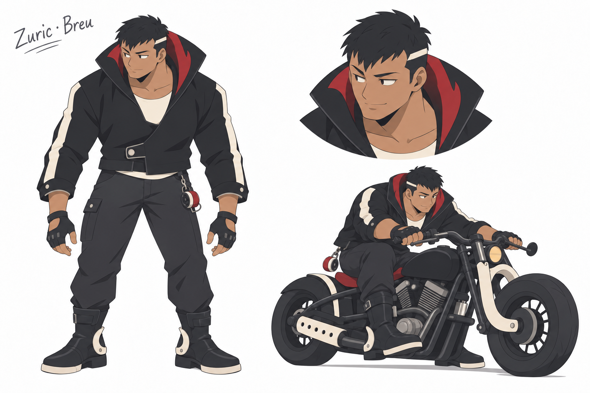
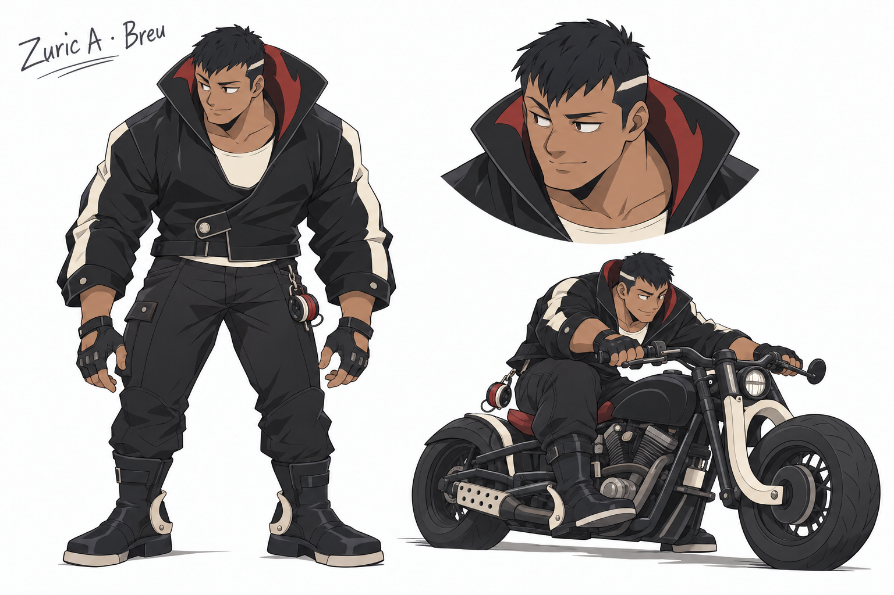
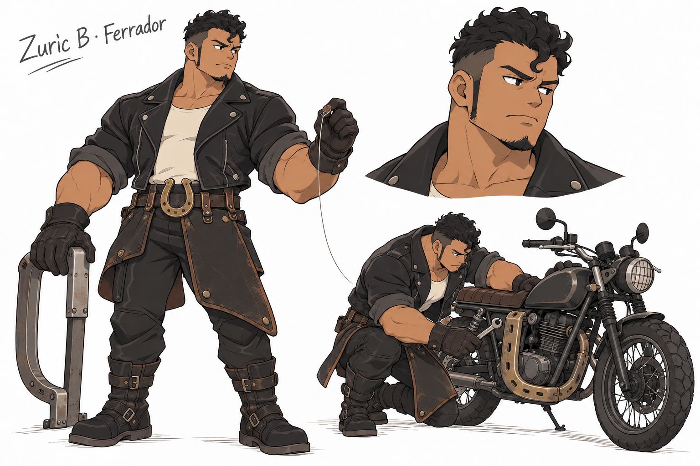
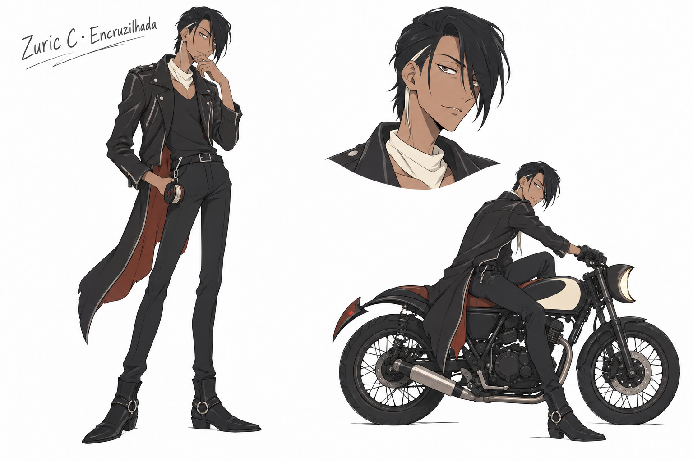

Zuric V2 · três arquiteturas e um refinamento
Requisitos preservados: motoqueiro humano, couro, atitude de gangue e inspiração na mula sem cabeça. A referência de acabamento é o Kael escolhido pelo usuário. Todos os desenhos novos estão em revisão artística.
A · Breu — direção escolhida para refinamento
Corpo compacto, gola ampla e pose baixa sobre a moto criam uma presença mais própria. O refinamento simplifica dobras, couro e detalhes mecânicos para aproximar o acabamento do Kael.

A · Breu — primeiro rascunho
Ênfase no vazio da gola e no peso da figura. Candidato escolhido pelo agente para refinar; não é aprovação do usuário.

B · Ferrador
Antebraços amplos e roupa de trabalho. Gesto delicado com linha contrasta com presença de mecânico. O acabamento ficou mais carregado que o alvo.

C · Encruzilhada
Corpo esguio e inclinado, franja baixa e uma única barra longa. A relação com a lenda fica mais discreta.

A · antes e depois da correção de acabamento
Prompts e revisão: source.json. V1 preservada. Nenhuma integração no jogo. A skill local foi atualizada sem tomar Zuric como referência aprovada.